ggplot(mtcars, aes(x = mpg)) +
geom_histogram(binwidth = 2)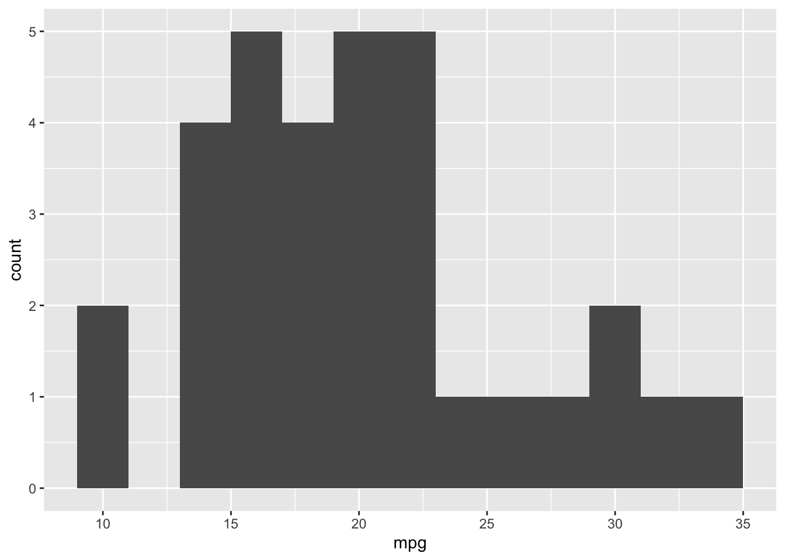
Raw data can be messy and overwhelming, making it difficult to interpret and work with. Descriptive analysis helps solve this problem by summarizing and exploring data in a way that turns raw numbers into patterns and insights that can be understood accurately and easily.
There are three key questions to consider:
How do we answer these questions? By examining the center, spread, and shape of the data – each of which describes a different aspect of the observations and together, helps us draw accurate conclusions about what the data is telling us.
Descriptive Analysis is organized around several key ideas:
The first three, center, spread, and shape, describe the distribution itself. Groups lets you compare distributions, while visualization is how you explore and communicate those characteristics. And all are equally important.
A Quick Example: Suppose two products both sell an average of 100 units per week:
Both products have the same average, but their weekly sales behave very differently. Knowing the average alone does not necessarily tell us what sales actually look like.
They have the same center, but very different spread.
Together, these tools help answer the key questions needed to understand a dataset before moving on to deeper analysis.
What’s a typical value?
Center is the measure that represents the typical or central value of a dataset. It describes the location around which the data tends to lie.
There are two main measures of center: mean and median.
The mean is the arithmetic average of a dataset. It is calculated by adding all observations together and dividing by the number of observations.
\(\bar{x} = \frac{\sum{x_i}}{n}\)
Pros:
Cons:
Median is the middle value of a dataset after the observations have been ordered. It is more robust to outliers than the mean. For a odd number of observations, sort the data and take the middle value. For an even number of observations (i.e. two middle values) take the two middle values and average them.
Pros:
Cons:
How much do values vary?
Spread describes how much the observations in a dataset vary or differ from one another. In other words, it tells us how dispersed the data is around its center.
The range measures the distance between the smallest and largest observations.
\(\text{range} = \text{maximum} - \text{minimum}\)
Pros:
Cons:
The IQR measures the spread of the middle 50% of the observations. In other words, how much do the middle 50% of values span? Because it ignores the extreme ends, it’s resilient to outliers.
\(\text{IQR} = Q_3 - Q_1\)
\(Q_1\) is the 25th percentile. \(Q_3\) is the 75h percentile.
Conceptually, IQR looks at: \[ \underbrace{\text{lowest 25\%}}_{\phantom{x}} \quad|\quad \underbrace{Q_1\; \longleftrightarrow\; Q_3}_{\text{middle 50\%}} \quad|\quad \underbrace{\text{highest 25\%}}_{\phantom{x}} \]
Pros:
Cons:
Variance measures how spread out observations are around the mean using their squared deviations from the mean. The deviations are squared so that negative and positive deviations do not cancel each other out.
To calculate:
\(s^2 = \frac{\sum{(x_i - \bar{x})^2}}{n-1}\)
Pros:
Cons: - Expressed in squared units, meaning it is less intuitive.
Standard Deviation is the square root of the variance. It allows for an interpretable scale of how much values differ from mean by putting variance back into original units.
\(s = \sqrt{s^2}\)
Pros:
Cons:
The Coefficient of Variation measures the standard deviation relative to the mean. In other words, it tells you how large the standard deviation is compared to the mean (how big is distance based on mean).
\(\text{CV} = \frac{\text{SD}}{\bar{x}}\)
Pros:
Cons:
What does the distribution look like?
Shape describes the overall pattern or form of a distribution. It helps us understand how observations are distributed around the center, including whether the data is symmetric, skewed, or contains outliers.
A symmetric distribution has approximately the same shape on both sides of its center. Neither side has a substantially longer tail than the other.
In a symmetric distribution, the mean and median tend to be relatively close.
A right-skewed distribution has a long tail extending to the right, toward larger values.
A relatively small number of large observations stretch the distribution to the right and can pull the mean upward.
Typically: \(\text{right skewed} \rightarrow \text{mean}>\text{median}\)
A left-skewed distribution has a long tail extending to the left, toward smaller values.
A relatively small number of small observations stretch the distribution to the left and can pull the mean downward.
Left tail \(\rightarrow\) mean pulled left \(\rightarrow\) Mean < Median Right tail \(\rightarrow\) mean pulled right \(\rightarrow\) Mean > Median
An outlier is an observation that is unusually far from the rest of the data.
The IQR rule can be used to identify potential outliers.
\(\text{lower bound}=Q_1-1.5(IQR)\)
\(\text{upper bound}=Q_3+1.5(IQR)\)
If the observation is outside of these bounds it can be flagged as a potential outlier.
An outlier should not automatically be deleted. It is important to investigate its cause first. For example, an extreme observation could represent a data-entry error, a legitimate unusual observation, or a measurement/unit issue.
A frequency table summarizes a categorical variable by showing the count and/or proportion of observations in each category. It helps identify common and rare categories and understand the overall category mix.
| Department | Count | Percent |
|---|---|---|
| Grocery | 39,021 | 42.3% |
| Drug GM | 31,529 | 34.1% |
| Produce | 3,118 | 3.4% |
| Plot | Data | Main Question |
|---|---|---|
| Histogram | 1 quantitative variable | What does the distribution look like? |
| Boxplot | Quantitative, often by category | How does the distribution/spread compare? |
| Scatterplot | 2 quantitative variables | Are the variables related? |
| Bar chart | Categorical | How do category counts/proportions compare? |
| Pie chart | Categorical proportions | How is the whole divided among categories? |
A histogram shows the distribution of a single quantitative variable by grouping numerical values into intervals called bins and showing how many observations fall into each bin.
Useful for identifying:
The bin width determines how wide each interval is and therefore how much detail the histogram shows
ggplot(mtcars, aes(x = mpg)) +
geom_histogram(binwidth = 2)
Use when: You want to see what the distribution of one quantitative variable looks like.
A boxplot provides a compact summary of the distribution of a quantitative variable using the five-number summary: \(\text{Min},\ Q_1,\ \text{Median},\ Q_3,\ \text{Max}\)
It is useful for examining:
Boxplots are especially useful when you want to compare distributions across categories.
ggplot(mtcars, aes(x = factor(cyl), y = mpg)) +
geom_boxplot()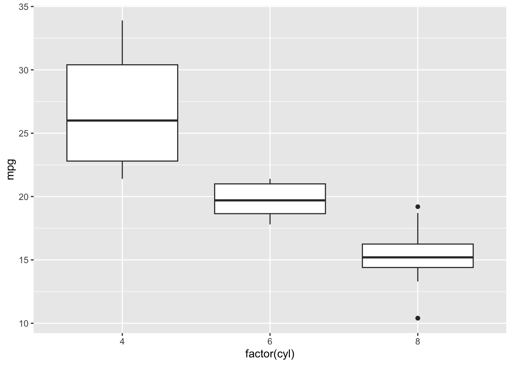
Use when: You want to examine or compare the distributions of quantitative data, particularly across groups.
A scatterplot shows the relationship between two quantitative variables. Each point represents one observation.
Useful for identifying:
ggplot(mtcars, aes(x = wt, y = mpg)) +
geom_point()
Use when: You want to know whether two quantitative variables are related.
A bar chart displays the counts or proportions of categories for a categorical variable. It is essentially the graphical version of a frequency table.
The categories are represented by bars, and the height of each bar represents its count.
ggplot(mtcars, aes(x = factor(cyl))) +
geom_bar()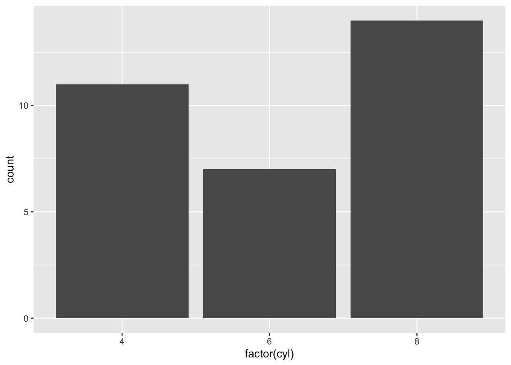
Use when: You want to compare counts or proportions across categories.
A pie chart displays proportions of a whole as slices of a circle. Larger slices represent larger proportions.
Pie charts work best when there are only a small number of categories. Similar-sized slices can be difficult to compare visually, so a bar chart is often easier to interpret.
mtcars |>
count(cyl) |>
ggplot(aes(x = "", y = n, fill = factor(cyl))) +
geom_col(width = 1) +
coord_polar(theta = "y")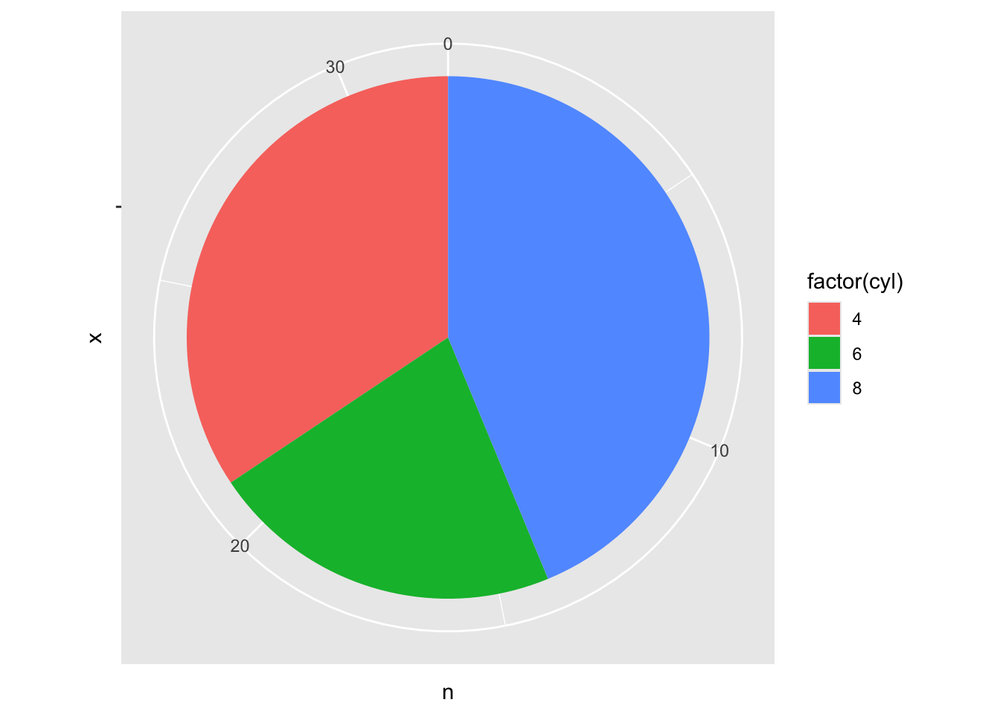
Use when: You want to show how a small number of categories make up a whole.
ggplot2 is a data visualization package in R built by combining data, aesthetics, and layers.
data + aesthetics + layers
Data = what you’re plotting aes() = which variables control visual properties geom_*() = how the observations are drawn scale_*() = how values are displayed facet_*() = split into groups labs() = titles and labels theme_*() = appearance
Aesthetics, specified with aes(), determine how variables in the data are mapped to visual properties of the graph.
Common aesthetics include:
ggplot(mtcars, aes(
x = wt,
y = mpg,
color = factor(cyl)
))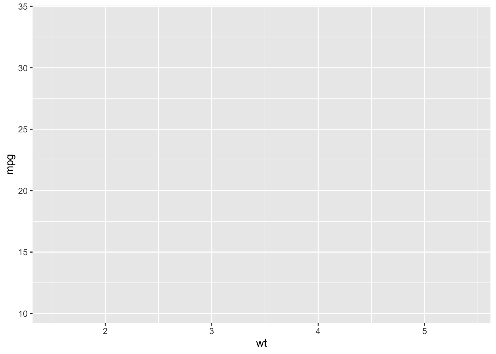
Layers determine how the data is actually displayed. They are usually added with geom_*() functions using +.
ggplot(mtcars, aes(x = wt, y = mpg)) +
geom_point()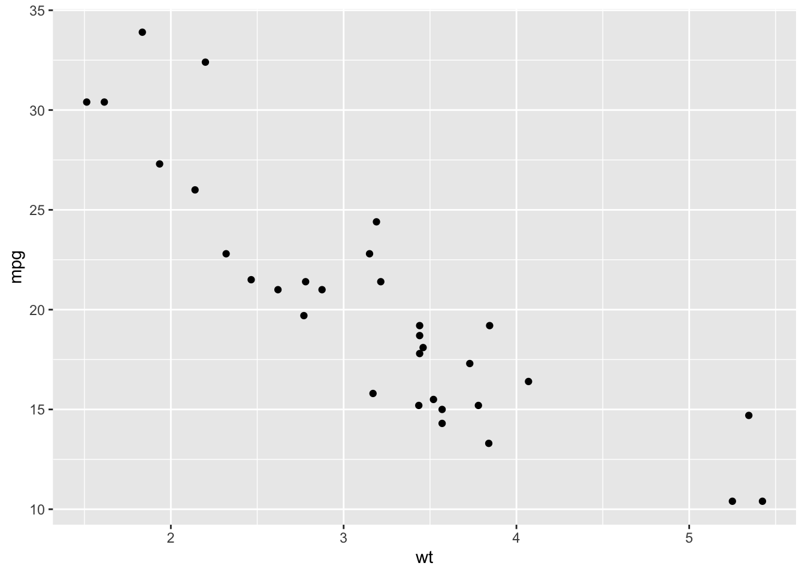
Examples include:
geom_point() geom_histogram() geom_boxplot() geom_col()
Mapping means a visual property varies according to a variable in the data. Put it inside aes()
ggplot(mtcars, aes(
x = wt,
y = mpg,
color = factor(cyl)
)) +
geom_point()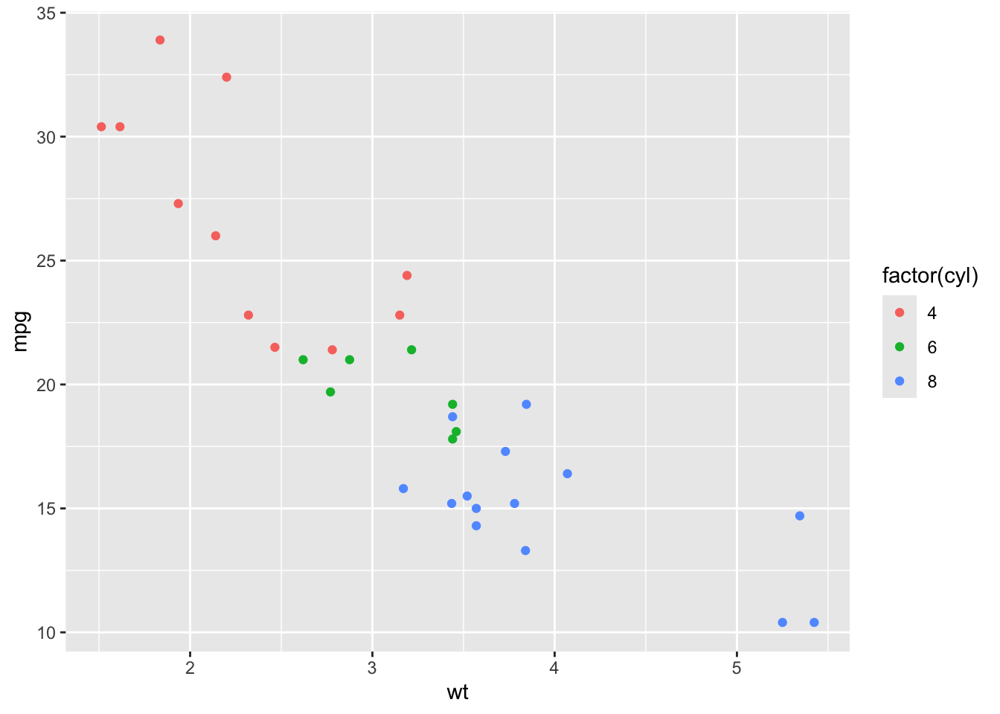
Different household-size categories receive different colors.
Setting means giving a visual property one fixed value. Put it outside aes()
ggplot(mtcars, aes(
x = wt,
y = mpg
)) +
geom_point(color = "steelblue")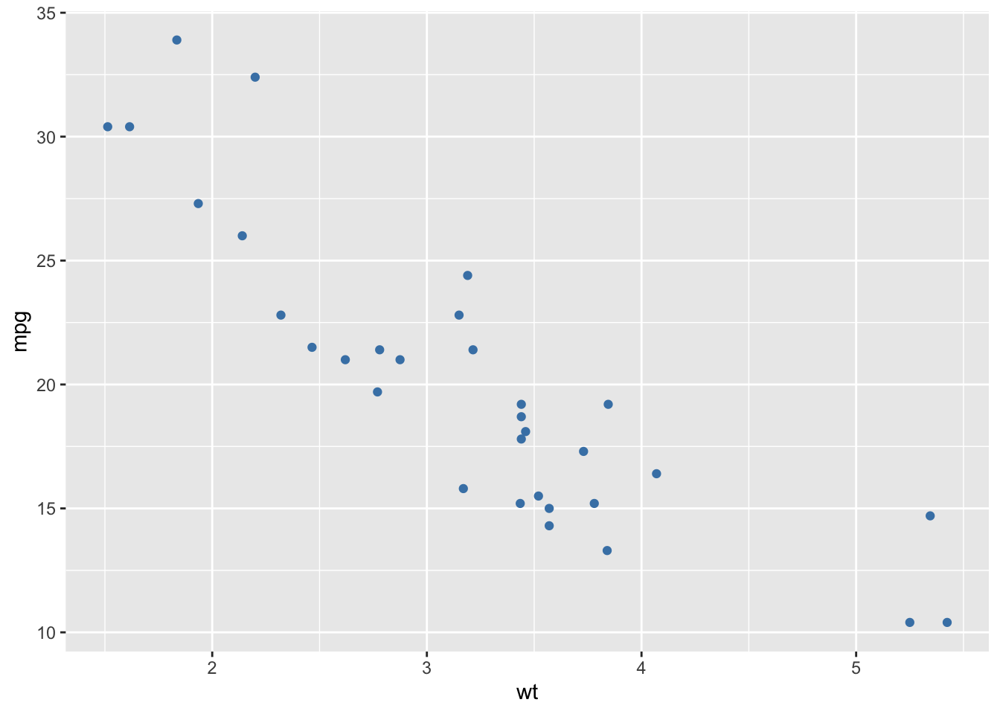
Now every point is steel blue.
Scales control how mapped data values are displayed, such as transforming or formatting an axis.
ggplot(mtcars, aes(x = wt, y = mpg)) +
geom_point() +
scale_y_log10()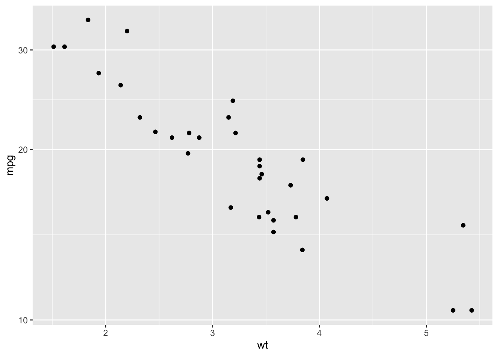
scale_y_log10() cisplays the y-axis on a logarithmic scale.
Facets split one visualization into separate plots for different groups.
ggplot(mtcars, aes(x = wt, y = mpg)) +
geom_point() +
facet_wrap(~ cyl)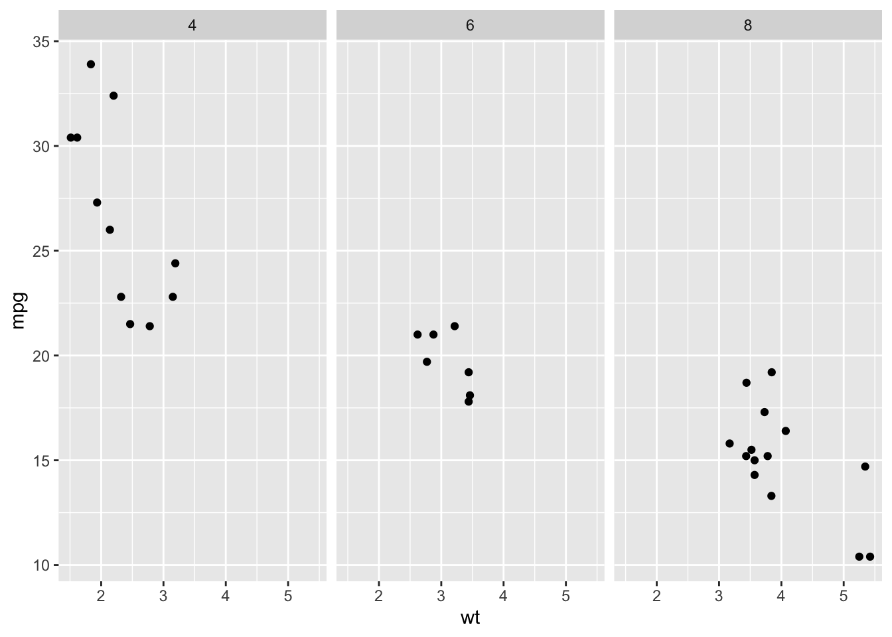
Instead of showing every household-size group on one graph, you get a separate panel for each household size.
labs() controls the descriptive text on the visualization:
ggplot(mtcars, aes(x = wt, y = mpg, color = factor(cyl))) +
geom_point() +
labs(
title = "Vehicle Weight vs. Fuel Efficiency",
subtitle = "1973–74 Motor Trend road tests",
x = "Weight (1,000 lbs)",
y = "Miles per Gallon",
color = "Cylinders"
)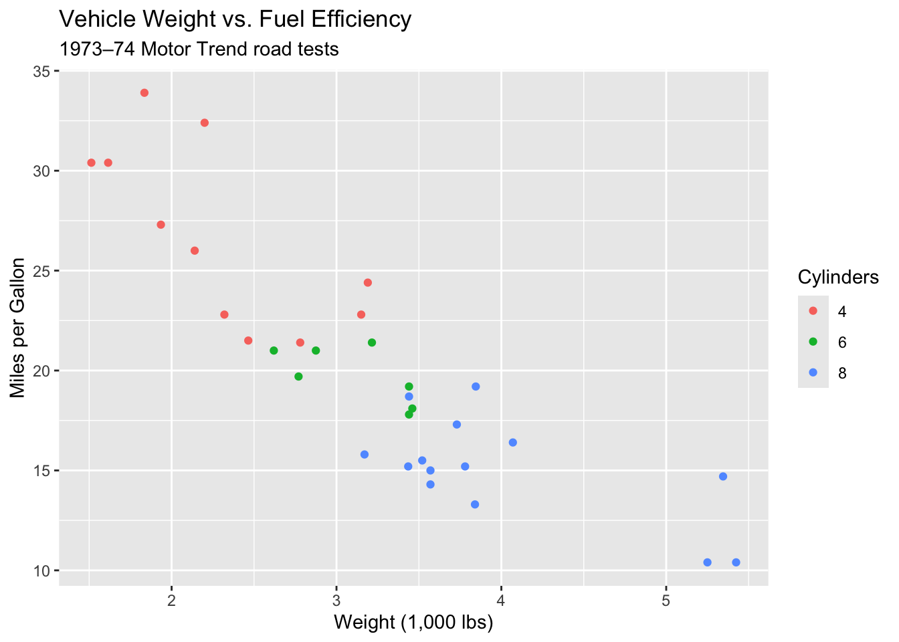
Themes control the overall appearance of the plot rather than the underlying data.
ggplot(mtcars, aes(x = wt, y = mpg)) +
geom_point() +
theme_minimal()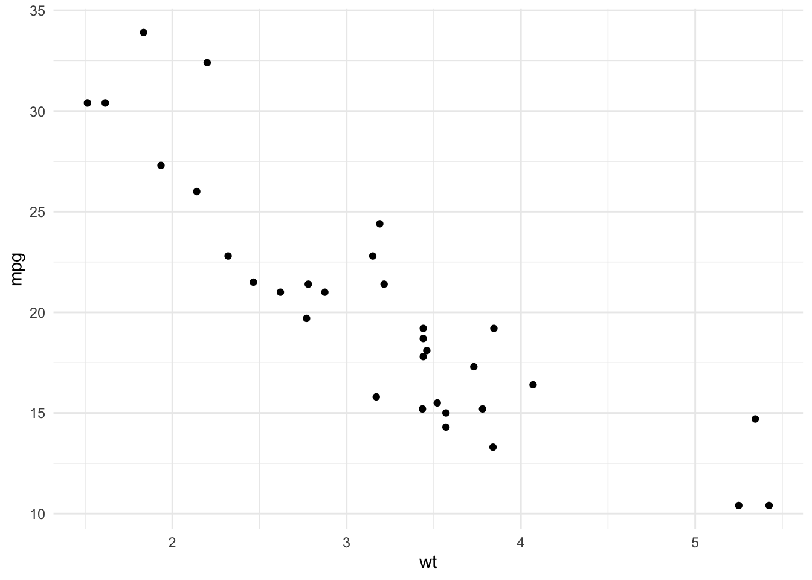